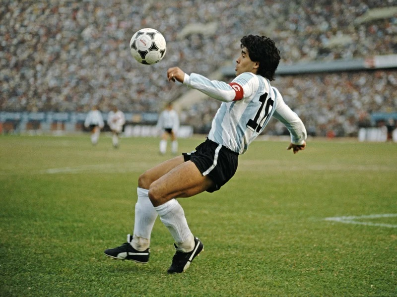
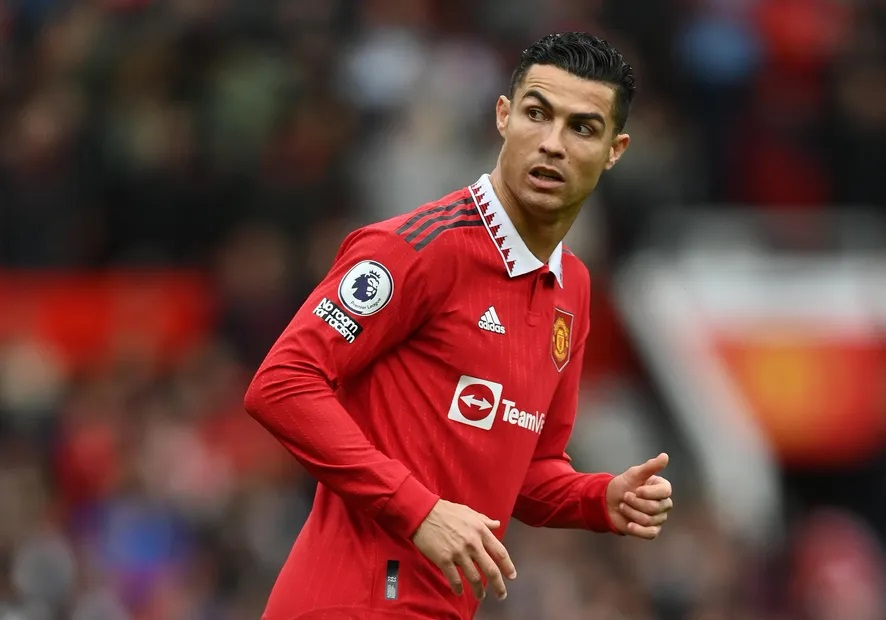
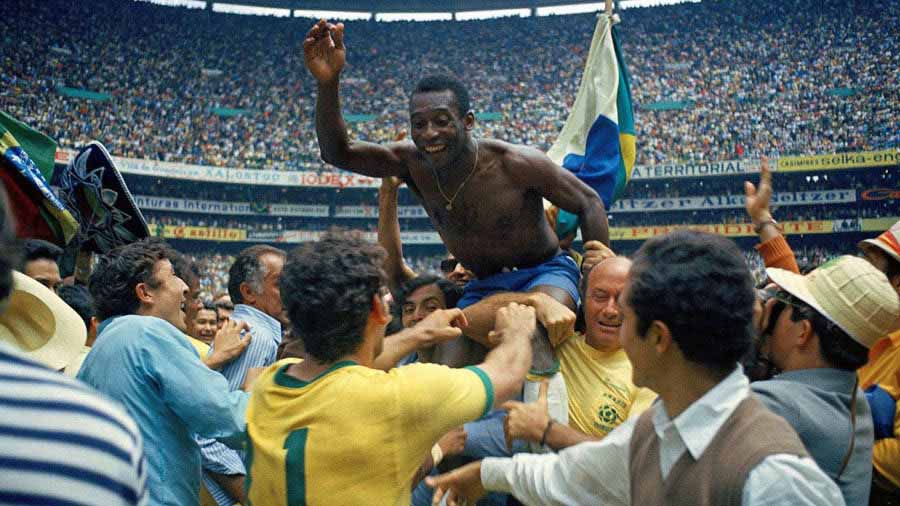
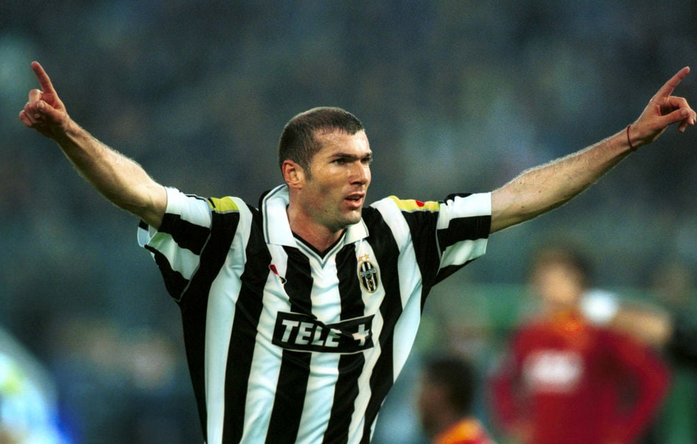
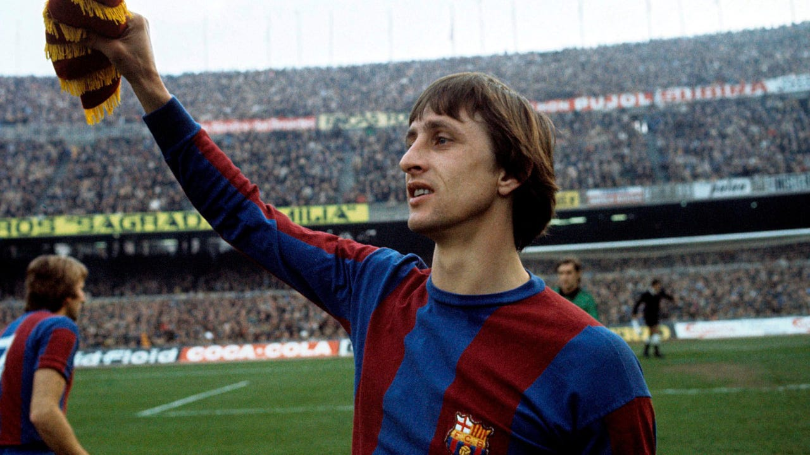
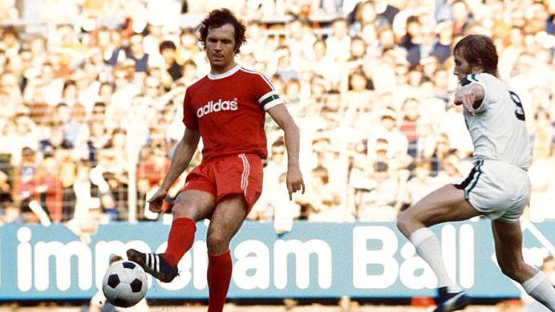
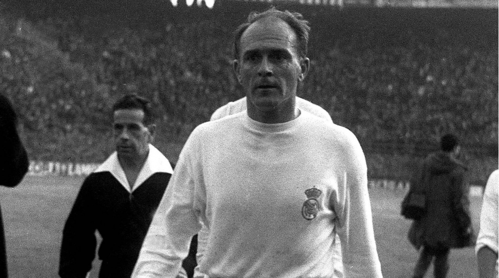
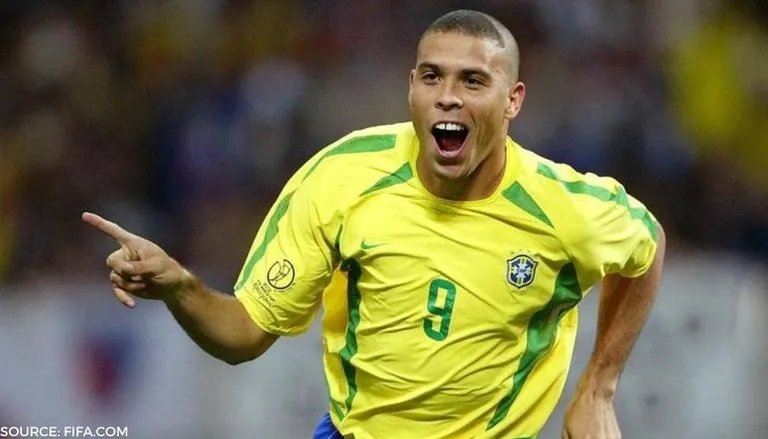
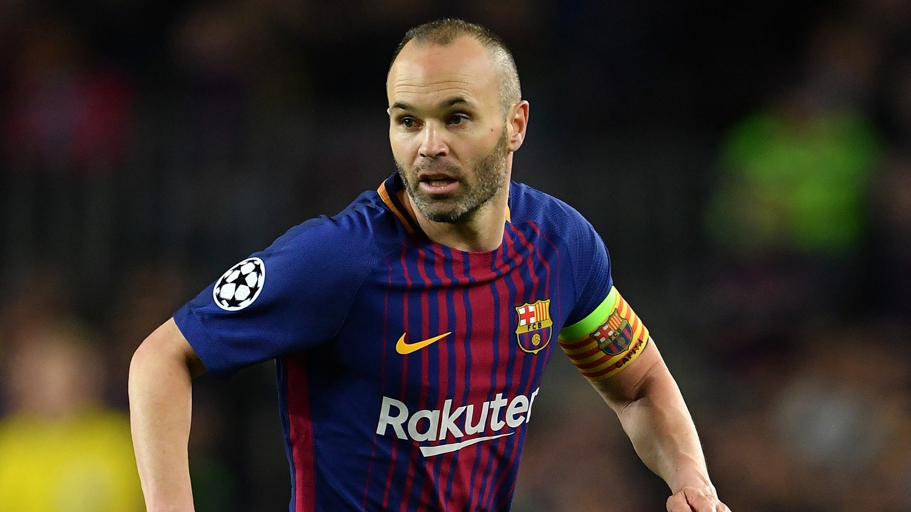

1. Lionel Messi

In 1,002 games for club and nation, Messi has 791 goals and 350 assists. That equals 72 minutes for
each goal assist. every 720 seconds. 18 years of his career.
Prior to being deciphered and neutralized, many top players are figured out, sussed, and enjoy a few
seasons in the sun. Never Messi.
Throughout his career, Messi has changed, primarily to suit his gradual slowdown, but the result has
never changed.
He has a remarkable touch, giving each delicate stroke the right amount of force, just like a fine
artist would when creating a masterpiece. Under his influence,the ball clings to his feet, and his
precise throwing technique is unquestionably the best of all time. Like Lionel Messi, no one has
ever or will ever successfully divide a defense.
The Argentine megastar will simply flip the best defenders in the world inside out if he doesn't
feel like going through you. In front of their families, he has manipulated many of them like rag
puppets. He doesn't take many hostages.
And at the conclusion of those runs, he has in the past demonstrated tremendous selflessness by
cutting the ball back with pinpoint precision or by sliding, dinking, or flicking the ball over the
goalkeeper. Messi essentially asks himself a multiple-choice question about how he wants to score in
each great opportunity he creates. The question is how, not if he will locate the net.
All of this adds up to the statement that Lionel Messi possesses the purest type of enchantment that
originally made us all fall in love with football. He simply chisels a grin onto your face as you
observe him. Up until the day he hangs up his boots, it has been an honor and will remain one. The
acknowledged, unquestionable Greatest of All Time.
2. Diego Maradona
Rarely is a player revered by supporters on both sides of the Atlantic as much as Maradona has been.
While the streets of Naples, Italy continue to be flooded with Maradona-ism in remembrance of their
icon, their legend, and their saint, Argentina is awash in tributes to their best son.
The diminutive Argentine forward had a low center of gravity, incredible technical skill, and the
ability to evade defenders in an unstoppable manner. Maradona was a threat to anyone who ventured to
oppose him due to his intensity and direct running style. In addition to inspiring dread in the
hearts of the opposition, this intensity inspired teammates around him to step up their game, much
like an army general in the thick of battle.
For a player who many still consider to be the best footballer of all time, Maradona's trophy
cabinet is surprisingly empty. You'd be forgiven for asking, "Is that it?" with one league
championship in Argentina and none with Barcelona. However, the trophies he did earn leave a lasting
impression because of how they were presented.
Before Maradona joined them from Barcelona in Serie A, Napoli was a mediocre, reliable, but
unspectacular team. In the five years following his arrival, they won the division twice, added the
UEFA Cup, and won the World Cup with Argentina—the last time they did so.
Napoli and Argentine football were completely changed by Maradona's legendary dribbling abilities,
vision, marksman-like passing ability, and unbridled drive to win. He pulled them, kicking and
screaming, to victory. a force of one.
3. Cristiano Ronaldo
You must zoom out to fully understand Ronaldo's brilliance and refrain from letting his clumsy 2022
actions color your opinion of him. Cristiano will eventually have earned a spot at the head table of
all-time greats once his tenure is over.
I know I said statistics and championships aren't everything, but when they're primarily the work of
one man, the fiercest competitor in football history, they're very hard to ignore.
Ronaldo has dominated the Premier League, La Liga, and Serie A, winning the local championship and
cup in each league. He has won five Champions League championships with two different clubs and the
European Championship with Portugal.
Ronaldo will have delivered a pivotal moment of brilliance in each of those seasons, in each
victory. fines for late arrival? No issue. Brutal blows that go against the flow of the game?
Sorted. Fire and brimstone performances that might defy the chances and change the course of events?
Done.
A winning masterclass has been provided by Ronaldo's existence. At his peak, he was unmatched in his
never-say-die mindset and matchday mentality. It should not be discounted that the 37-year-old will
be remembered as the greatest European footballer of all time despite his inability to age
gracefully despite two decades of accumulating proof to the contrary.
4. Pele
The goal of Brazilian football is to exemplify Pele's attitude. Everything a Brazilian football
player has ever accomplished is because Pele did it first. With 77 goals for Brazil in just 92 games
and three World Cups to his credit, he is undoubtedly the best player to ever compete on the
international stage.
The memory of Pele is an intriguing one. Some people frown at Pele's accomplishments, especially his
claimed "1,281 goals in 1,363 games" statistic, when in reality, many of those games were exhibition
showpieces against much inferior competition.
His record without those contests is still incredibly strong. In 659 games over an 18-year period,
he scored an estimated 643 goals for Santos. He then took his skills to the US with the New York
Cosmos to finish his career.
The fact that he never played frequently in Europe is often used as a stick to criticize Pele, but
his record internationally says a lot about his ability regardless of the situation. At the time,
some of the best defenses in the world simply couldn't handle his devastating pace and deadly
precise finishing, and he still would at his peak.
5. Zinedine Zidane

Zidane stands out as the ultimate complete midfielder if Ronaldo was the ultimate complete attacker.
The Frenchman displayed an unbelievable level of technical skill along with the elegance and grace
you wouldn't anticipate from a guy of six feet one.
His touch was otherworldly, just like the grass he walked across. His mastery of the ball was
mesmerizing. His ability to change gears and turn a routine catch into the beginning of a bloody
drive through the field has hardly ever been matched since.
Zidane will be remembered as one of the all-time great dribblers, but his intelligence with the ball
gave his attacks even more threat because he never ran out of options or ideas, consistently made
clinical decisions, and most of the time the ball found a teammate or the goal.
Zidane's trophy cabinet is surprisingly not as full as you might assume in terms of total
accomplishments, but everything is there at least once. The Champions League, La Liga, Serie A, the
Euros, and the World Cup. However, winning awards isn't the best indicator of excellence. The degree
of dread he would instill in each foe in his path? That characterizes excellence.
6. Johan Cruyff

Nearly 40 years before Pep Guardiola's Barcelona and the Spanish national team used 'tiki-taka
football' to conquer the globe between 2008 and 2014, Cruyff, another revolutionary figure,
successfully lit the fuse.
With Ajax, where he began his career and tallied 257 goals in 329 games, Cruyff was a conductor of
the idea of "Total Football." Long after quitting, the Dutchman freely acknowledged that he thought
many other players were more technically endowed, stronger, fitter, and more powerful, but that the
key to his success as an individual was mastering his tactical designs.
He was a strong believer in doing things the "right" way in order to win football games. Although
not for everyone, Cruyff's "win with style" attitude was everything.
He was allowed to perform however he wanted at Barcelona and had great success. Over the years, The
Cruyff Turn has spread from the Nou Camp pitch to schoolyards all over the globe. Johan Cruyff, a
visionary football player with unrivaled on-field intelligence, is responsible for the development
of a great deal of the contemporary game.
7. Franz Beckenbauer

It can be very challenging to compare players across the board, but Beckenbauer's talent and ability
to perform in a wide variety of positions made him an easy choice for the list.
The German originally played as a midfielder for Bayern Munich before switching to the center of the
defense, where he essentially created the contemporary sweeper position. Beckenbauer, who stands 5
feet 11 inches tall, was a surprise with the ball in his hands during a time of rigid defense and
big, burly center backs.
He was the most at ease with the ball of any defender, to the extent where he could play as a
box-to-box midfielder from the position of center back. The man, who had the ball glued to his feet
and effectively performed 90-minute bleep tests, was rewarded with an astounding 98 goals over the
course of his 754-game career, including 75 in 584 games for Bayern Munich.
If he had made his debut in the 2010s, Beckenbauer would have been one of the most in-demand players
in the world. He was a player ahead of his time.
8. Alfredo Di Stefano

Most people agree that Di Stefano is the best player in Real Madrid's illustrious past. Given the
numerous golden eras the club has experienced and the legendary Galacticos who have entered the
Bernabeu and inscribed their names in the hearts of the populace, that assertion is
astounding.
The striker was born in Argentina and even played six times for them before moving to Colombia (!)
and then settling on Spain, where he played a startlingly small number of international matches—just
31 with 23 goals to his credit.
Similar to Ronaldo Nazario, Di Stefano was an all-around striker with technical prowess that was far
superior to that of his time in the 1940s and 1950s. He had incredible strength, speed, and
stamina.
After terrorizing teams in his native South America for a decade, he scored a staggering 308 goals
in 396 games for Madrid over an incredible 11-year span.
9. Ronaldo Nazario

While Ronaldo's legacy has been criminally disregarded by his supernatural namesake, Iniesta's
career has been somewhat overshadowed by his supernatural colleague.
Without a question, R9 ranks among the best center forwards in football history. It's simple to
overlook the significance of a world-beating, complete No. 9 in an age of wide forwards and false
nines.
The epitome of an all-around player who transcended sports and came to represent greatness, Ronaldo
was the face of an age.
Like no other before or since, the Brazilian superstar had the ideal balance of speed and power.
Simply put, he was wealthy. Physical dominance, an abundance of technical skill, and a predatory
instinct that allowed him to always be in the right place at the right moment to time his
devastating runs. R9 charging toward them with the ball at his feet is one of the most intense and
terrifying sights in football for a defense.
10. Andres Iniesta

Some footballers simply weren't born at the right time to rule the globe, but even those players
still had successful careers.
Iniesta would have won everything in a universe without Lionel Messi and Cristiano Ronaldo. It is
tragic that he did not win at least one Ballon d'Or during his illustrious tenure.
We are becoming more and more fixated on statistics, and I include myself in this. Although some
players have absurd assist totals and outrageous goal scoring totals, not all players can be
evaluated solely on their statistical output. On a worksheet, football is not played.
It should never be necessary to defend Iniesta's impact on any squad he has ever played for. Nobody
could influence a game like Iniesta, possibly not even Messi himself. Although he may have had Xavi
by his side and a genuine Argentine wizard in front of him to shoot for, Iniesta's touch, ingenuity,
imagination, and vision were practically unmatched.
The Spanish megastar, who helped his nation win a World Cup and two European Championships, didn't
need Messi's explosiveness to become the second-best Barcelona player of all time and the most
significant player in Spanish history.